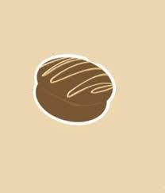
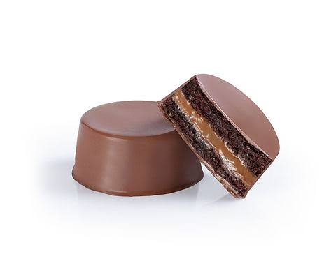

Pão de Mel Tradicional
Produzido artesanalmente, com cobertura de chocolate e recheio.
65 gPorção de referência
1 unidade
1 unidade
Lote, fabricação e validade: consulte a embalagem do produto.

Pão de MelARTESANALProjeto Escolar · 2026Conheça nosso pão de mel tradicional e descubra os detalhes por trás de cada mordida.
Ver informação nutricional
Modelo ilustrativo 3D · arraste para girarInformações do produto reunidas em um só lugar.
Produzido artesanalmente, com cobertura de chocolate e recheio.
Lote, fabricação e validade: consulte a embalagem do produto.
Farinha de trigo enriquecida com ferro e ácido fólico, mel, açúcar, ovos, leite, chocolate ao leite, cacau em pó, fermento químico, canela e cravo.
Lista do projeto original. A composição deve ser confirmada pelo grupo responsável.
Pão de mel · Porção: 65 g (1 unidade)
| Nutriente | 100 g | 65 g | %VD* |
|---|---|---|---|
| Valor energético (kcal) | 355 | 231 | 12 |
| Carboidratos (g) | 37,4 | 24,3 | 8 |
| Açúcares totais (g) | 28,5 | 18,5 | — |
| Açúcares adicionados (g) | 23,7 | 15,4 | 31 |
| Proteínas (g) | 11,5 | 7,5 | 15 |
| Gorduras totais (g) | 17,5 | 11,4 | 18 |
| Gorduras saturadas (g) | 9,3 | 6,0 | 30 |
| Gorduras trans (g) | 0 | 0 | 0 |
| Fibra alimentar (g) | 6,2 | 4,0 | 16 |
| Sódio (mg) | 206 | 134 | 7 |
*Percentual de valores diários fornecidos pela porção.
Contém trigo, leite e ovos.
Contém glúten.
Pode conter amendoim e castanhas.
Informações do projeto original; confirme com o grupo a receita e as condições de preparo.
Guarde em local fresco, seco e protegido da luz solar.
Consulte a embalagem e o grupo responsável para confirmar a validade e o prazo de consumo após aberto.
Turma 1ºF
Do QR Code aos detalhes:
mais informação em cada mordida.